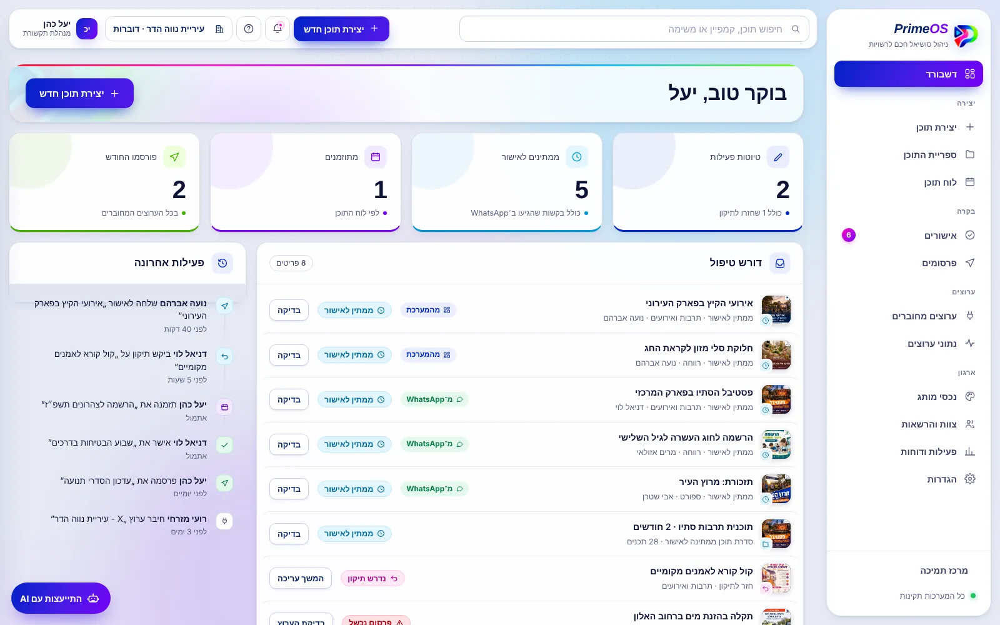
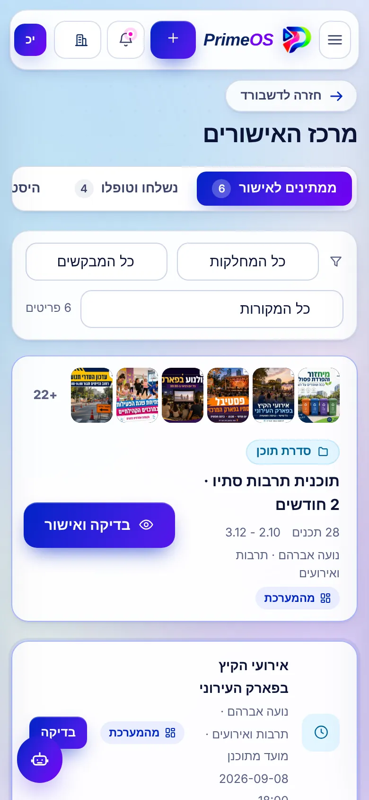
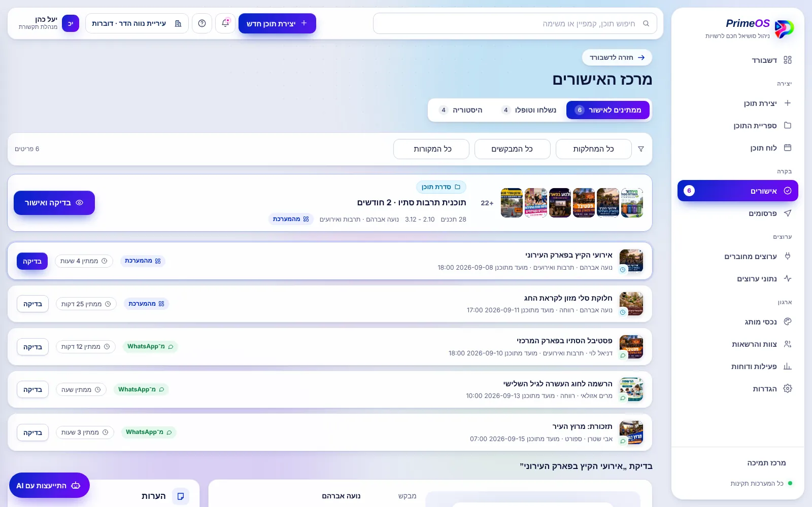
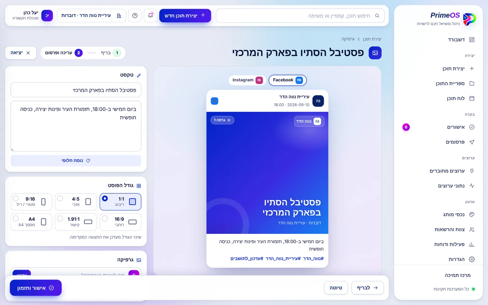
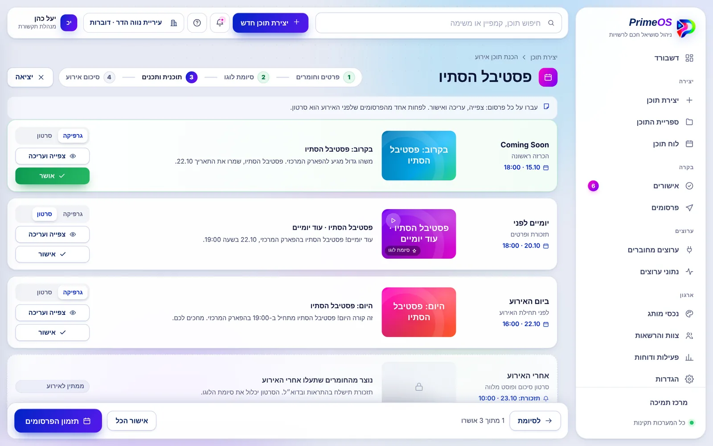
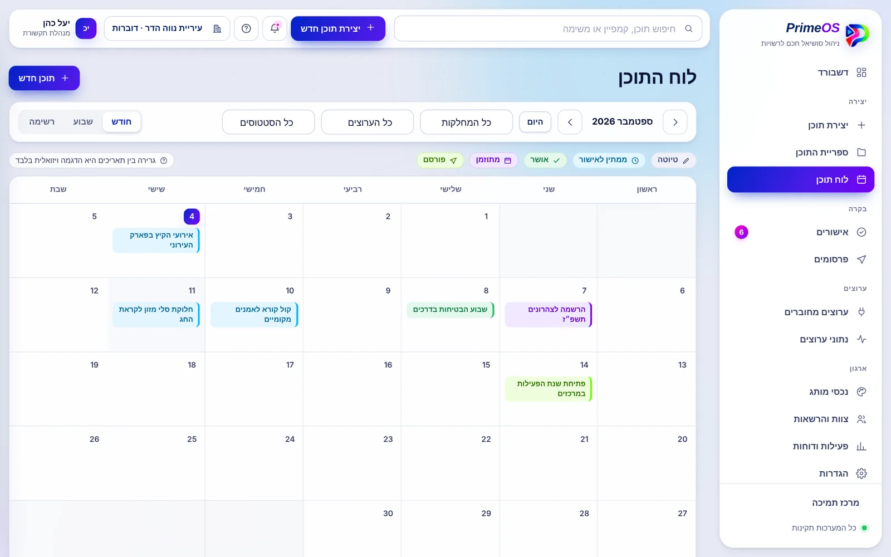
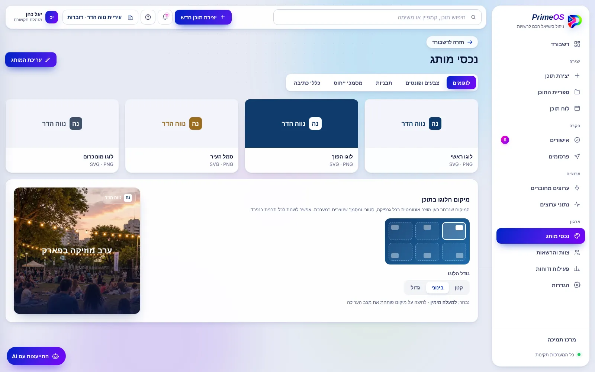

עיריות
- דוברות שמקבלת בקשות מגורמים רבים
- מחלקות שצריכות לפרסם בלי לעקוף את הדוברות
- שפה ממלכתית אחידה בכל הערוצים
PrimeOS מרכזת את כל עבודת התוכן של עירייה, רשות מקומית או מתנ"ס במקום אחד: הבינה המלאכותית כותבת ומעצבת בשפה של הארגון, כל מחלקה עובדת בממשק משלה, ושום פוסט לא עולה לעמוד הרשמי בלי האישור שהוגדר לו.


פוסט של רשות מקומית הוא הודעה לציבור. טעות בתאריך, בשם או בניסוח היא לא רק מבוכה, היא פגיעה באמון. לכן המערכת מתחילה מהאחריות, ורק אחר כך מהמהירות.
במסלול המורחב כל מחלקה מקבלת ממשק משלה, וכל תוכן עובר דרך הגורמים שהארגון הגדיר. הדוברות רואה הכל, המחלקות רואות רק את שלהן.
שלב 1 מתוך 4מחלקת התרבות יוצרת פוסט לפסטיבל
תוכן שיצר גורם מאשר עובר לגורם אחר. אין קיצורי דרך.
כל מחלקה רואה רק את התכנים שלה, והגישה מוגבלת לטלפונים ולמיילים מורשים.
במרכז האישורים רואים אם הבקשה הגיעה מהמערכת או מוואטסאפ, כולל ההודעה המקורית.
מי יצר, מי ביקש תיקון, מי אישר ומתי. היסטוריה לכל פריט, בלי מחיקות.
הרשאת פרסום בלי אישור ניתנת רק למי שהמנהל הראשי בחר בה.
פריט שהוחזר מגיע ליוצר עם הסיבה, וחוזר לאישור אחרי התיקון.

גרפיקה, מסמך, מצגת ווידאו, כל אחד בתהליך שמתאים לו.

מזינים את פרטי האירוע ומעלים לוגו וחומרים. המערכת בונה את כל רצף הפרסום.

תכנון של חודש עד שישה חודשים קדימה, כולל חגים ומועדים.

ה-AI עובד לפי הלוגו, הצבעים, הפונטים, התבניות וכללי הכתיבה של הארגון.

הבינה המלאכותית ב-PrimeOS עובדת על החומרים של הארגון עצמו, ולא מפרסמת דבר לבד. היא חוסכת את שעות הכתיבה והעיצוב, וההחלטה נשארת אצל הגורם המוסמך.
לוגו, צבעים, פונטים, תבניות ומסמכי ייחוס שהארגון העלה.
"לקצר", "רשמי יותר", "להחליף תמונה". כל תיקון יוצר גרסה חדשה.
שאלה על לוח התוכן, על הגדרה או על פריט, בכל רגע.
כל פריט עובר את מסלול האישור לפני שהוא מתפרסם.
גוף ציבורי לא יכול להרשות לעצמו פרסום לא מורשה או דליפה בין ארגונים. לכן ההגנות בנויות לתוך המבנה של המערכת. לפירוט המלא
כל רשות רואה רק את המידע שלה. ההפרדה נאכפת בכל פנייה למידע, לא רק במסך.
מחלקות נכנסות רק מטלפון או מייל שברשימת המורשים, עם קוד חד-פעמי. למנהלים יש אפשרות לאימות דו-שלבי.
כל פעולה נבדקת מול ההרשאה של המשתמש בשרת, גם אם מישהו מנסה לעקוף את הממשק.
ההרשאות לעמודי הפייסבוק, האינסטגרם ושאר הערוצים נשמרות מוצפנות, ואפשר לנתק אותן בכל רגע.
כל פעולה רגישה נרשמת: מי, מה, על מה ומתי. תוכן ומשתמשים לא נמחקים, רק מועברים לארכיון.
המערכת בנויה מימין לשמאל, עובדת בטלפון ותוכננה לעמידה בדרישות נגישות של גופים ציבוריים.
התאמת המסלול נעשית בשיחה, לפי מספר המחלקות, המשתמשים והערוצים.
משתמש אחד שיוצר, מאשר ומפרסם ישירות.
דוברות או מנהל ראשי, ומחלקות שכל אחת עובדת בממשק משלה.
לעיריות, למועצות מקומיות ואזוריות, לרשויות מקומיות ולמתנ"סים, וגם לגופים ציבוריים אחרים שמפרסמים תוכן בעמודים רשמיים ורוצים שכל פרסום יעבור אישור מסודר לפני שהוא עולה.
כל מחלקה עובדת בממשק משלה ויוצרת תוכן. התוכן נשלח לגורם המאשר שהוגדר לה, ומשם, לפי המסלול שהארגון קבע, לדוברות או למנהל הראשי. שום פריט לא מתפרסם בלי אישור, ומי שמאשר לא מאשר תוכן של עצמו.
לא. הבינה המלאכותית כותבת, מעצבת ומציעה. ההחלטה לפרסם נשארת אצל אדם מורשה בארגון, לפי מסלול האישור.
גרפיקה לפוסטים, מסמכים בשלושה סגנונות (רשמי, גרפים וטבלאות, מעוצב), מצגות, וסרטונים: אנימציה, עריכת סרטון קיים או סרטון מתמונות. בנוסף יש תהליך מובנה להכנת תוכן לאירוע ותכנון תוכן לחודשים קדימה.
כן. עובדים יכולים לשלוח בקשה בוואטסאפ, והיא נכנסת למרכז האישורים עם סימון שהמקור הוא וואטסאפ, יחד עם נוסח ההודעה המקורית.
המסלול הבסיסי מיועד למשתמש אחד שמנהל את התוכן ומפרסם ישירות. המסלול המורחב מיועד לארגון עם מחלקות: ממשק נפרד לכל מחלקה, גורם מאשר לכל מחלקה, מרכז אישורים ובקשות מוואטסאפ.
ממלאים ארבעה פרטים, וההודעה מוכנה לשליחה אלינו בוואטסאפ. אפשר גם להתקשר.
טלפון: 054-771-2034